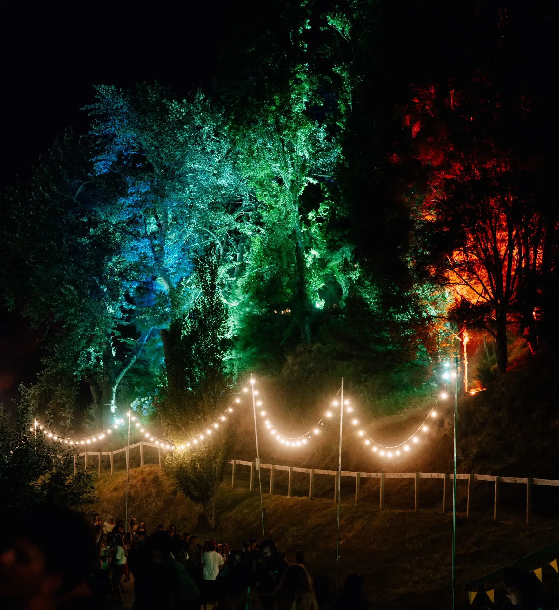
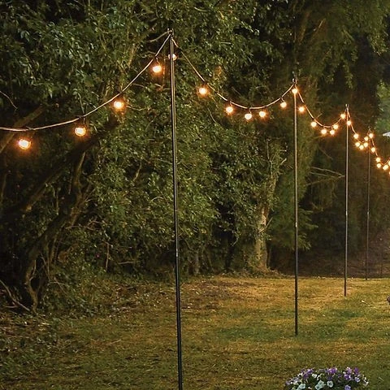
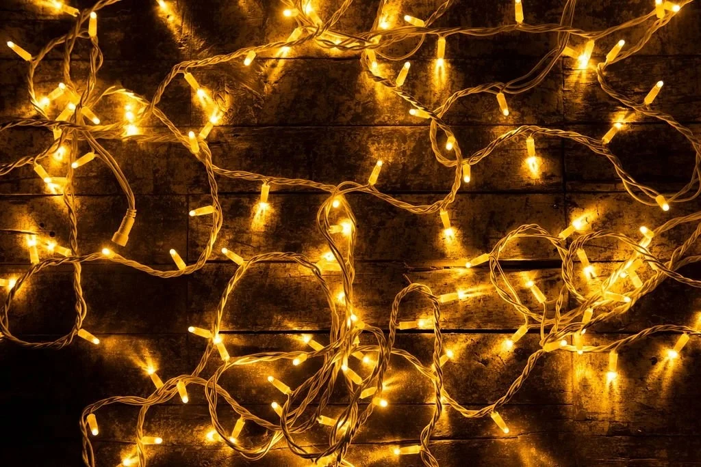
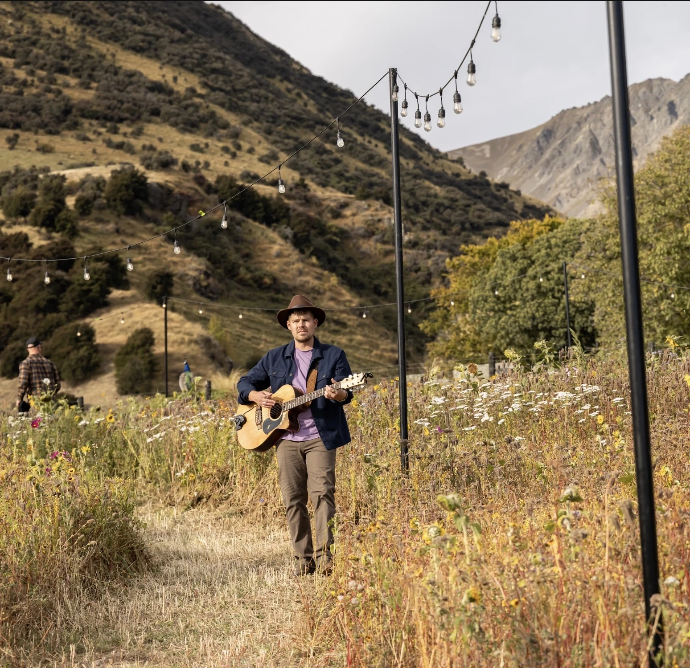

Festoon lighting transforms outdoor spaces. Strung across courtyards, through trees, over marquees, or along pathways, it creates atmosphere that photos can't do justice. We carry up to 4km of festoon in stock, so we can cover anything from a small garden wedding to a full festival site.
We handle installation and removal. You just tell us the space and we figure out how much you need and how to run it.


$30 +GST per 15m section
Warm white LED bulbs on black cable. 15m strings that join together to cover any distance. Up to 4km available.

$15 +GST per 10m
Available in black or white cable with warm white or cool white bulbs. Great for wrapping around trees, draping across ceilings, or lining pathways.

$12 +GST per pole
3m black festoon poles. Use where there are no trees or structures to anchor the festoon to. We install them for you.
These are standard rates. Email us with your event details to get a quote and book.
Each string is 15m long and they join together. Warm white LED bulbs on black cable. Looks clean during the day and comes alive at night.
We handle the install and removal. Cable tensioners keep everything taut. Minimum 2.5m clearance for walkways, higher for vehicle access.
Festoon pairs well with uplighting, marquees, and wedding setups. We do a lot of festoon + uplighting combos for outdoor receptions.

Tell us about your space and we\'ll figure out how much festoon you need.
Get in touch or call 021 178 0355.
Each string is 15m. They join together so we can cover any distance. We carry up to 4km in stock.
Yes. We use cable ties, hooks, and tensioners depending on what\'s available. For open spaces with nothing to anchor to, we use 3m festoon poles ($12+GST each).
All the time. Festoon + uplighting is one of our most popular wedding combos. Check out our wedding AV hire page for the full picture.
All Ears Events Limited
20 Southwark Street, Christchurch
021 178 0355 · hello@allears.nz
Mon-Fri 9am-4pm